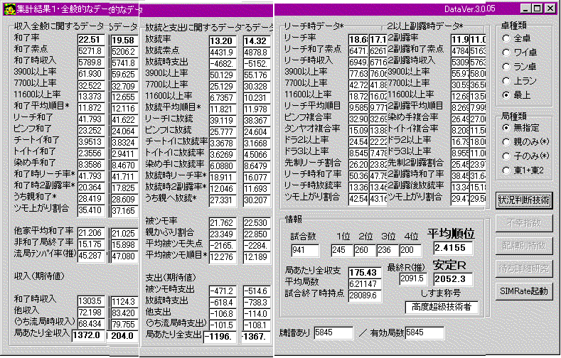

麻雀問答
麻雀についての長年の疑問に、できるだけ理屈やデータを出しながら答えてみましょう。
１）出親とラス親どっちが有利？
各々試合数1000で比較。全4119試合。
出親 安定Ｒ1880 親かぶり割合 24.8％
南家 安定Ｒ1935 親かぶり割合 25.017
西家 安定Ｒ1896 親かぶり割合 23.163
ﾗｽ親 安定Ｒ2045 親かぶり割合 19.13％
安定Ｒだけを比較してもかなり差が出ている。出親・南家・西家は誤差の範疇であるが、ラス親だけ異常に強い。1000試合単位で150の差は、そうそう偶然出る値ではない。
とつは「ラス親有利」と結論する。
よく言われるのは「東１はサクっと安手で流されるから出親不利」とか「オーラスの親は降りてツモられ、攻めて振り込むからラス親不利」などだが、直感を比較していても何も生まれない。
データを見よう。
「出親＋南家＋西家」のデータと、「ラス親」のデータにおいて、明らかに差が生じた唯一のデータは、「親かぶり割合」であった。
ラス親が親かぶりが少ない主要因を考察する。
主要因） ラス親は「上がりやめ」ができる。だいたい４試合に１試合はオーラストップであり、そのうちオーラスで上がるのも４試合に１試合程度である（つまり１６試合に１回、親かぶりを回避できる）。また、オーラス２位から親で上がった場合も上がりやめできると考え、これらトータルで８試合に１試合「親かぶりを逃れる」としよう。
出親での親かぶり24％のうち８回に１回分の親かぶりはこの要因で回避され、その差はおおよそ3％である。
上の主要因から、出親での親かぶり割合24％のうち3％は除去され、21％となり、ラス親での親かぶり率にかなり近づく。
モデルが厳密ではないから値の若干のずれは無視するが、「上がりやめできる」という影響だけで、これほど大きな差が生ずることは興味深いことであり、概ね納得できる程度の値が出た。
「東１は安く流されるから」といった理由よりは明らかに信じやすい。サクッと流されるということは、親かぶりの支出もその分減るということであり、そのメリットとのかねあいも考慮せねばなるまい。「ラス親は降りていられない」とは言っても、相手もそうなので場合によっては上がりやすいとも言える。これまで言われてきた直感的な「ラス親有利・不利要因」は、メリットとデメリットの片方だけを偏重していたように思われる。データ（親かぶり以外のデータは、各々ばらばらであってラス親が有利たる特別な影響を与えていないように思われる）と上記計算から推察されることは、親かぶりの割合の差だけが、ラス親が有利な根拠であるということである。
以上より、「あがり止めありのルールにおいては、明確にラス親が有利である、その有利さは、少なく見積もっても順位にして0.1以上、安定Ｒにして120以上である」と言えるだろう。
（当然、人によってはラス親の方が弱い、という場合もあるだろう。ラス親だから降りてもいられず攻めまくる人などはそうであろう。しかしここで今一度強調されるべきことは、ラス親が有利であるという一つの実験結果と、それに対する概算としての数式による説明が一致したという事実の重大さである。）
２）「振らず上がらず」だと何位が見込めるの？
振らず上がらず 無放銃 焼き鳥
上ラン卓（他家平均Ｒ1780） 2.9379位 1.8759位 3.4861位
最上卓（他家平均Ｒ1950） 3.0000位 1.9691位 3.4725位
上ランは1792試合、その間安定Ｒ1909
最上は1495試合、その間安定Ｒ2001
（従ってここで、上ランの順位と最上の順位をそのまま比較することは危険である。例えば、本来焼き鳥を脱するよう試みるべき局面において、安定Ｒ2000の時の方が、安定Ｒ1900の時よりもその試みを行った可能性が高いからである。結果として上ランの順位は、安定Ｒ2000の人が取れたであろう順位よりも、若干悪くなっているはずである。）
３）どうして東風荘は一発率が高いの？
よく「東風荘は一発が多すぎる！ 不自然」とか言われるがそんなことは全くない。
一発が多いように感じるのは、単に、ドヘタが多いというだけだ。
ドヘタは、Computer代打よりも振るのだから。
序盤に「安全な」字牌をばしばし捨てて中牌を貯め込み、ちょうど相手がリーチする頃には手の内は危険牌だらけになり、しかも１シャンテンや２シャンテンの「勝負したい形」になっている。初心者は平気で ４５５５６ ８８ とか残すものだ。
そうするといきおい、リーチの瞬間には「危険牌が出やすい形」になっているわけだ。
ワイ卓のデータ取ってみなさい。一発ツモより一発ロンの方が、その「本来の差」に比して圧倒的に多い。
最上に来てデータ取ってみなさい。一発ロンより一発ツモの方が、その「本来の差」に比して圧倒的に多い。
Com代打より振りまくるドヘタと打っている水準が、東風のプログラムに文句言わないように。
４）最上卓の勝ち組になるには？
できすぎくんの集計オプションを用いて「Ｒの高い人」「Ｒの低い人」別の集計を行った結果を示す。
各々のデータの左側が安定Ｒ2050のデータ、右側が安定Ｒ1850のデータに対応する。

データの比較を元に、強くなるためにはどういう点に気を付ければ良いかについて考察しよう。
課題１）和了率を上げよう（目標値21.5％以上）
和了率に歴然の差がある。和了率を上げるためのポイントを示す。
まずはリーチを早くすることが何より重要である。和了におけるリーチの占める割合は同じであるから、先制リーチ割合の差は、そのままメンゼンでのテンパイ速度の差を表している（しかも負け組は、遅いくせにドラも少なく点数が低い）。先制リーチ率が25％を切るような打ち手は、もう一度メンゼンでの手作りの効率化を図るべきだ。そして、上がれそうにないリーチはかけないこと。リーチ時和了率に差が出ている。クソマチのリーチが多いと和了率は上がらない。上級者と同じスピードで、同じ程度に「良い待ち」のリーチをかけるために、もう一度、浮き牌や愚形の処理順やアンコを利用した多面待ちへの変化など、「基礎的なメンツ作り手順」を見直すべきだ（負け組の人には、とつげき東北の最上卓の牌譜は良いテキストになるだろう）。
次に２副露時に無理に染め手やトイトイを狙わないことも重要である。２副露時の和了率に大きな差があり、勝ち組は負け組よりも染め手やトイトイにこだわっておらず、２副露和了点数もかなり安い。染め手やトイトイは、点数が必要な時と、比較的自然な変化で作れる場合を除いて、あまり無理に狙うべきではない。
課題２）高い手には振らないようにしよう
放銃素点に差がある。放銃素点を下げるためのポイントを示す。
これにもまず大切なのは、リーチを早くすることである。先制リーチができないと、放銃の機会が増える上、相手の手に放銃した場合の失点がかなり上昇する。先制リーチさえかけてしまえば、相手も安手では追っかけがかけづらく、仮に放銃したとしてもダマで安い、ということになる場合も多い。
そして２副露時に無理に染め手やトイトイを狙わないことがここでも重要になる。２副露時放銃率の比較は興味深い。要するに負け組は、上ランでは簡単にチーポンでき素早く上がれた染め手やトイトイに頼りすぎているのだ。染め手やトイトイは確かに高得点になるので、１シャンテンなどからでもリーチにつっぱる機会が多くなる。が、最上卓ではそれらは簡単にテンパイできるものではなく、どうしても先制攻撃につながりにくいと思われる。また待ちが特定されるので、他のプレイヤーが降りやすくなり、リーチ者との１対１勝負になってしまうことが多い。
さらに、親への放銃を避けることが、放銃のダメージを減らすために非常に重要である。親への放銃率が非常に大きく違っている。この差はそのまま放銃失点の差につながっているだろう。親が２鳴きしたのに、おかまいなしで無スジをばんばん切るのはやめよう。食い仕掛けは捨て牌に特徴が出やすく（３３４からの３の先切りなど、メンゼンで使われるようなテクニックがほとんど絶対使えない。序盤に出た牌の外側は、メンゼン手に比較して極めて安全度が高い）、かなり放銃を避けやすいはずである。
親への放銃は極端な差が出ていて、ここでの失点の違いが、勝ち組と負け組を分けるかなり大きな要因となっていると思われる。
また染め手への対処技術に大きな差がある。染め手が一人でもいる場合、その染め色の不要牌はなるべく危険度が小さい間に全て処理してしまい、危険になったら「テンパイの時に勝負！」に切り替えるのが基本である。相手が２シャンテンあたりだと思われるのにもかかわらず、ムダに抑えすぎるのは絶対にやめた方が良い。ただしもちろん、自分の手がバラバラな場合は早々に諦めてベタオリする姿勢も重要だ。
トイトイへの対処技術も違う。トイトイに対して安全なのはなるべく場に見えている数の多い、なるべく最近切られた牌である。まだ１鳴き程度の段階でなら、いつか切ることになるだろう危険牌を先切りし（つまり例えば、３３４のような形と浮き牌１つがある場合に、通常なら浮き牌を残して３を切るところを、後に危険になる浮き牌から切るということである）ておく。２鳴き以降になったら危険だから、３３４のような形を整理しながらテンパイを目指し、テンパイしたら浮き牌を勝負、という方針が基本的な打ち方だろう。
染め手やトイトイに対する一般的な対処として、「役牌をどの程度絞るか」という問題がある。序盤に数牌からポン・チーされた場合などには、自分の手が普通のピンフ系であるなら、１鳴きのうちに役牌は全て切るべきである。２鳴きになってからではロンされる危険が大きすぎる。１鳴き目で役牌が確定したなら、次の役牌は自分の手の良さを考慮しながら切るかどうか決める。いずれにしても、上がれる見込みがあって、結局切るならば早い方が良い。
課題３）放銃率を下げよう（目標値13％未満）
放銃率に差がある。放銃率を下げるポイントは以下の通り。
放銃率を下げると言っても、ただやみくもに降りてばかりいるわけではない。まずは、意味のない放銃を避けることが重要である。Ｒ1800台などの打ち手は、役牌ドラドラあたりの手に無警戒な人が多い。役牌をポンされたら、その人の手の進行を捨て牌からある程度判断し、危険になったら（例えばカンチャン落としがあったり、中牌がいくつも切られたりしたら）降り気味に打つこと。捨て牌にあまり出ていない部分（マンズの上とピンズの下、とかその程度で）を切ることを避け、できるだけ序盤の捨て牌の外側を切る。時にはそのために、１３と７８の２つのメンツ候補から７８の方を切っていくようなこともすべきである（例えばドラが見えていない時など）。こちらが勝負手であるならば危険な部分はできるだけ早くに処理しておき、そうでないなら充分に警戒して、「役牌ドラ１」など安手への放銃も避けねばならない。また、食い仕掛けなどが入っていなくても、捨て牌が２段目に来たあたりから、ダマテンパイが多くなる。自分の手がバラバラであったりクズ手であるなら、その段階からかなり慎重に、スジや壁の外側を切るように心がけたい。
流局テンパイを狙いすぎないように注意する。見ての通り、勝ち組の方が流局時テンパイ率が低い。東３やオーラスなどの緊迫した場面で、流局テンパイしなければ順位が１～２下がるというような場合でなければ、基本的には降りるならベタオリが良い。
放銃率を下げるために何より重要なのは、ベタオリの技術を高めることだ。ベタオリなど誰にでもできると思ったら大間違い。誰かのリーチに対して、他家が攻めているのか降りているのかを判断し、今後危険になる他家に対する共通アンパイを残しながら降りる必要がある。ベタオリのポイントは、「確実にテンパイしている相手に対して最も安全な牌を切る」こと、「今後危険になりそうな、現在安全な牌を先に切る」こと、そして「アンパイがない場合に、安全度の高い牌をうまく見出す（ただのスジより中スジの方がはるかに安全、壁よりもピンフ消しのスジが安全、全く降りられないならトイツやアンコを落として先の安全を確保、当たる確率を低くすべきか当たった場合の失点を低くすべきかの適切な判断、など）」ことである。ベタオリの技術はバカにできない。降りてダマやスジヒッカケに振り込んでしかたないと思っている間は放銃率はなかなか下がらない。
以上の３つの課題を達成するには、とりわけ
・メンゼンのテンパイ効率を最大限に高める → 先制リーチ → 和了率増加・放銃率減少
・ベタオリ技術を高める → アンパイ抱え込みの必要性が減る・無駄な放銃が減る → 和了率増加・放銃率減少
・食い仕掛けへの対処 → 高い放銃・親への放銃・無駄な放銃が減る → 放銃率減少
・食い仕掛けの方法の工夫 → ミエミエの手を減らす → 和了率増加・放銃率減少
これらを意識して打つ必要があると言えるだろう。
具体的に目標とすべき数字は、上の図にある「勝ち組」の値そのものである。
リーチ率や先制リーチ率が低いなら、リーチ手になるように工夫する（字牌を貯め込みすぎず、できるだけメンゼンテンパイにとる）。染め手への放銃が多すぎるようなら、危険牌処理を工夫する・・・等。
とつげき東北が最上卓で安定Ｒを大きく伸ばした時には、「読み」が鋭くなったわけでも、「回し打ち」がうまくなったわけでもなかった。結局はこれらの項目の技術の向上がその原因であったと言って良い。実感としては「序盤に字牌を貯め込まず、リャンメン候補はできるだけ残し、手を広めてリーチを目指す」「ただし、先制されたらかなり慎重に降りる」「食い仕掛けは、無理に染めたりトイトイをつけず、役牌ドラ１なども使う」「高くなさそうな食い仕掛けに対しても無駄な振り込みを避ける」という部分を意識しているが、実際、これで上のような目標値に非常に近いデータが出るようになった。
５）なぜＲ2000超が増えたの？
最上卓（超ラン）ができてから、Ｒ2000超の打ち手が明らかに増加した。
第一東風荘最上卓の他家平均Ｒの推移を見てみよう。
00年４月～00年５月末 1924
00年６月～00年７月末 1939
00年８月～00年９月末 1940
00年10月～00年11月末 1941
00年12月～01年１月末 1950
このように、最上卓に存在する「全体のＲ合計値」は増加傾向にあり、現段階では、最上卓発足当時と比較しておおよそＲ25分の「インフレ」が起こっている。
Ｒ2000超増加の要因として考えられることは
１）Ｒ1850に満たない者が最上で打つことによる最上での「Ｒ合計」の増加
・上ラン→最上 へのＲ流入によるもの
例えば、実力Ｒ1800程度の上ランのメンバーが、たまたま好調でＲ1850に達した時、せっかくだからと最上で打つとする。実力は1800なので当然、最上ではＲを減らし＝「最上に余剰のＲを残し」、また上ランへと戻っていく。この過程で、上ランから最上へのＲ流入が発生する。しかもこれは、その人が最上に残った場合とは違って、繰り返し行われる過程である。
・新キャラによるもの
「超ランで打つ」という、実力のない者にとって憧れの対象である行為のために、新キャラで300試合Ｒ1850を達成した者が最上で打つ。当然負ける。これによって最上にＲが流入する。
・イカサマによるもの
同じく、実力では届かないＲをひっさげて、多重君がＲを撒き散らしてくれる。
これらが上の「他家平均Ｒの増加」に対応する要因である。
また、Ｒ2000超増加の他の要因として
２）個人の技術向上によるもの
最上卓は周りのメンツも強く、上ラン時代のようにＲ1900で「お山の大将」でいることができなくなった。必然的に、実力アップを志す者が増加するだろう。
３）４人のレベルが接近することによる、「実力差」が結果に与える影響の増幅
これについては考察を充分に進めていないが、現段階ではこのような現象が起こるかさえ定かではない。
とつげき東北はどの卓で打ってもほぼ同じ安定Ｒを記録しており、今のところこれの影響は大きくないと推察される。
などが挙げられる。
要因１）による他家Ｒの増加分が25であるから、「昔のＲ2000」は、「今のＲ2025」とほぼ同等の価値を持っていたと言うことはできる。
個人的には 要因２） が主要因であると考えている。実際、最上ができてからも「昔の上ラン時代にＲ1950くらいで強くて有名だった人」のうち、現在も1950付近のままである人は少なくない。逆にＲが急上昇した人もいるし、下がった人もいる。
（とつげき東北も上ラン時代にはＲ1850～2000でうろうろしていた。現在の安定Ｒは楽勝2000を超えているが、そのために打ち方を何度も何度も大幅変更した）。
若干、楽観的な意味合いも含めて、であるが──Ｒ2000超の増加は主に、個人の技術向上の結果である、と結論する。
６）第一最上卓で、全員Ｒ2000以上の試合に出会う確率は？
自分を除く他家３家が、全員Ｒ2000を超えている確率は？ 実測データを示す（できすぎくんv3.13による）。
とつげき東北 最上卓試合数 2665試合 うちＲ2000以下がいない試合 22試合 発生率 0.826％
100試合に１回もない高レベル卓ということになる。
ちなみにとつげき東北は、この22試合で負け越し(
ノД`)
他のデータも示す（ただしこのデータは最上発足初期の頃のデータも含まれる。現在は少し他家平均Ｒが上がっている）。
Ｒ2000以下がいない確率 0.826％
Ｒ1950以下がいない確率 9.118％
Ｒ1900以下がいない確率 40.11％
Ｒ1900以上がいない確率 1.951％
Ｒ1950以上がいない確率 17.86％
Ｒ2000以上がいない確率 52.23％
ちなみに
Ｒ2010以上しかいない卓 15試合
Ｒ2020以上しかいない卓 ６試合
Ｒ2030以上しかいない卓 ４試合
Ｒ2040以上しかいない卓 ０試合
「参加資格Ｒ2040以上（もちろん試合数800とかはダメね。試合数1500以上）」の大会などを開催すれば、非常に価値のある大会になると思われる(
´ｰ`)y-ﾟﾟ みぎわ♪氏や千波(慎)氏、monboo氏など「チョーツエー人」しか出れないけど(笑)。
やろっかな(笑)
７）東１局０本場に生起した現象別の順位は？（東風戦）
「東１局０本場に何が起きた時に、最終的な順位にどの程度の影響を及ぼすか」を集計した。
とつげき東北の第一東風荘最上卓の2949試合のデータを用い、できすぎくんv3.45の「４人集計」機能で集計した。
のべデータ数は12000試合弱である。
データ）東１局０本場での自分の点数の変動による最終順位の変動
自分の得点の増加／そのような状況数／安定Ｒの増加分 条件付きデータ
0～0 3319 ＋22.9
1～1999 967 ＋233.8 ロン和了時 283 187.8 流局時 601 273.40
2000～3899 811 ＋408.4
487 434.70 139 309.98
3900～5199 363 ＋624.6
231 652.01
5200～7699 313 ＋652.4
177 689.78
7700～10600 547 ＋985.4
315 949.15
10601～15999 263 ＋1206 138 1125.3
16000～ 38 ＋1637
-1000～-1999 2624 －150.5 放銃時 330 -201.4 流局時 835 -185.4
-2000～-3899 1542 －323.4
467 -304.4 87
-687.8
-3900～-5199 617 －527.3 209 -679.7
-5200～-7699 294 －752.0 174 -825.8
-7700～-10600 323 －1039
313 -1061
-10601～-15999 140 －1333
138 -1335
-16000～ 13 －1528
※なお、安定Ｒの変化と平均順位の変化とは比例し、安定Ｒ120の増加が平均順位0.1の減少に対応する。
考察１）ツモ上がりとロン上がりとどちらが有利か
ツモ上がりとロン上がりをした場合に、どちらが有利になるかを検証する。同じ得点の上がりをした場合での安定Ｒの上昇（順位の改善）を比較する。
ここで、上の得点の取り方は恣意的であって、必ずしもツモとロンに対して公平ではない（例えば、「ロンならば3900点は作りやすいが、ツモでは作りにくい。故に、3900～5199のうち、ロンは3900に偏っている」というようなことがあり得る）。
しかし、上のデータのどの得点帯のツモ・ロンを比較しても、安定Ｒの増分に大きな差はない。また、必ずしも高い得点帯におけるツモの比率が高くなるわけでもない。そこで、各得点帯ごとの、ツモやロンによる偏りは全体として相殺されるものと単純化して、全体の「Ｒ上昇平均」だけで考える（※ツモ・ロン失点の得点帯の分布を正規化した計算も行ったが、影響はなかった。補足に示してある）。
上がり１回あたりのＲ上昇期待値
通常時 ＋565.1（3264試合）
ロン時 ＋608.0(1631試合)
ツモ時 ＋552.3（1633試合）
1600試合単位で安定Ｒ56の差が「偶然出る」確率は13％以下であり、一般的な感覚であると思われる「ロン上がりよりツモ上がりの方が有利」は迷信である。むしろ「ロンの方が有利！」とさえ言えるかもしれない（もちろん、Ｒの上昇分608に対して56であるから、その「有利さ」自体は大きな差ではない。また正規化を行った場合の結論では「差はなし」という結論になっている。しかし、少なくとも「ツモがロンより良い」というのはデタラメである）。
「ツモ上がりは、ロン上がりに比較して順位平均は有利ではないが、トップ率は高まるのでは？」という考えもあるかもしれないが、ほとんど無関係だろう。面倒だったのでデータを残さなかったが、感覚的には大差はなかった。ロン上がりよりツモ上がりの方が有利にならない要因は、ツモによるメリットの分と、ロンによって１人を完全に突き放し「自分の順位を脅かす相手が2/3に減る」こととのメリットの分がほぼ釣り合うことだと考えられる。そのことは、トップを狙う場合にも全く同様の結果をもたらすだろう。
考察２）放銃による失点と被ツモによる失点は、いずれの影響が大きいか
同様に、同じ失点をした場合に、放銃による失点と被ツモによる失点のうちいずれの影響の方が平均順位に対して大きくなるかを検証した。上と同様の方法であるが、ツモ失点はロン失点よりも低い失点である場合が圧倒的に多くなるために、各々の得点帯の生ずる比率が同じになるよう正規化※して計算した※計算方法は補足参照。
同程度の失点１回あたりのＲ上昇期待値
通常時※ －583.0（元データ5540試合）
ロン時 －619.7（1631試合）
被ツモ時※ －567.7（上記より算出）
こちらも若干差が生じた。同じ失点でも、ツモられるのとロンされるのでは違う。ロンされることの方が、平均順位に対して悪い影響を及ぼす。ほとんど全ての得点帯において、ツモよりロンの方が深刻な結果を与えた。この結果は「ツモられた場合とロンされた場合の失点が同じ程度の時」であることに注意されたい。親かぶりうんぬんの話ではなくて、「同じ失点でも、ツモよりロンの方が少し不利である」ということを示している。
考察３）流局時のテンパイを狙う狙い方をどのように考えるべきか
（あるいは、１打ごとの判断をどのようにすべきか）
流局時のテンパイをどの程度狙うべきかについては、次のように考えると良い。
自分がテンパイを崩して降りることによって、流局した場合のＲは273→-185となり、458減少する（ただしいずれも２人～３人ノーテンの場合）。これは2000～3900の放銃と同じ程度の損失にあたる。
序順で相手がテンパイした場合、流局まで辿り着く可能性自体が低いため、「降りる」行為による安定Ｒの損失期待値は小さい（むしろ、放銃→被ツモとすることは、上の考察から正しい選択となろう）。終盤で相手がテンパイした場合、流局まで辿り着く可能性が高くなっている。したがって、半々の確率での2000～3900の失点を覚悟の上で最後の１枚を勝負するといった行動は正しい。ある牌が当たる確率、相手のリーチがある得点帯に位置する確率が概算でわかっていれば、それを元に極めて正確な「テンパイ維持すべきかどうか」の判断を下すことができるだろう。
１打ごとの「攻める？ 降りる？」の判断や、何を切るの判断は、決して「点数期待値」だけからなされるべきではない。
上のデータにあるように、点数が２倍になることは決して順位期待値の上昇分を２倍にはしないし、同じ失点でもツモと放銃では若干違う結果になる。
判断に最も大きな影響を与えるべきは、たいてい常に「上がりやすさ」「放銃しやすさ」などの確率である。
補足データ１）
上記データにおいて、東１に親であったことの影響によって得点と順位の関係に何らかの影響が出るのではないかとの懸念から、念のために出親の場合とその他の場合の安定Ｒの差を比較した。
終了方法・得点を問わない場合の、全体に対するＲの増加分を示す。
出親の時 3043試合 -18.73
それ以外 9131試合 +6.24
上記研究に対する誤差は考慮しなくて良い。
補足データ２）
ある点数を親で上がることと子で上がることとの間に、有利さの差があるかのためのデータを取った。
とくに目立った差は見出されなかったので、そのデータの一部だけを示しておく。
子に限定した2000～3899 711 +442.97
子に限定した3900～5199 247 +633.74
子に限定した5200～7699 213 +679.38
子に限定した7700～10600 441 +1027.5
※補足）
計算方法は次の通り。
１）ロン失点の際の１回あたりのＲ増加期待値をデータから普通に計算する。
２）各得点帯の確率分布を被ツモ時にもあてはめた上で、１回の被ツモ当たりのＲ増加期待値を計算する。
なおこの方法による正規化を、考察１）の場合にも適用してみたが、ツモの場合のＲ変動は６１４．１となり、「ツモの方がロンより有利」ということが迷信である結論には変化ない。
上に出したデータは第一東風荘最上卓という限られたものだが、このようなデータが算出されたこと自体がすばらしいと思う。誰でも努力すれば取れなくはなかったが、誰も努力しなかったために取れなかったデータだからだ。
あるリーチ、あるテンパイ、ある待ちに対するある牌の危険度やツモられる確率等のデータが揃って来れば、高度にシステマティックな打ち方理論を構築することも夢ではない。というのも、麻雀の強さ探求は、細かい牌効率・上がり点期待値計算の問題ではなく、もう少し「離散的な」もの、「分散が大きな」ものにあり、それは「こういう状況で→こういう狙い方をせよ」との記述が比較的容易なものだからである（完全に厳密な、細かい計算を必要としないという意味で）。判断が完全に理論的であることは最終目標としてひとまず置いておいて、麻雀の技術を向上するための、不完全だが非常に有用なデジタルが存在するという事実は心強い限りだ。
強調したいのは、「牌効率の完全な計算や裏ドラ枚数の計算よりも、純理論ではない実測データでの順位期待値計算の方が（平均順位の上昇のためには）遥かに有用である」という点であり、現在一般で言われる「デジタル」の指針の見直しをすべきだと感じている。デジタルと言えば計算ばかりに目がいくが、計算よりもまずは実測データから切り込んだ方がずっと効率的だろうと思う（なぜなら相手の挙動の純理論的なモデル化は相当困難を極める上、それが少しでも狂うと結果にシビアに表れてしまうからだ）。
もちろん、「反デジタル」などを掲げることは話にならない。
デジタル←→反デジタル の対比などかなうはずもなく、単に ＩＱ100以上←→ＩＱ100以下 の対比だけが存在する。
「理論では麻雀をカバーしきれない、やはり長年の経験や感覚が重要だ」と声高に叫ぶ連中の、長年の経験と感覚に、「ツモ上がりはロン上がりより有利ではない」という正しい理解が入っているか、甚だ疑問である。
ついでに、長年の経験を積み、感覚を磨いた上でとつげき東北に負けているようでは報われなかろう。
８）第一と第二のＲの比較方法は？
論文「麻雀の成績比較の方法論」として発表。
９）試合数が違う場合の安定Ｒの比較方法は？
論文「麻雀の成績比較の方法論」として発表。